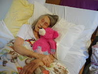
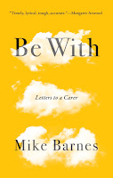
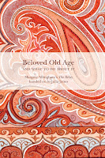
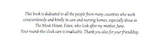

 |
| Mum with 'Mr Cuddlebear' a present from her great granddaughters. There's more than one way to 'Be With'. |
{kind=link}
I know so little about death. When I go to the internet and consult the Marie
Curie site I see Mum’s symptoms checking almost all the boxes – but
also these may equally well be the manifestations of her severe infection,
diagnosed ten days ago. So there’s no let-up in the struggle to get the antibiotic
medication into her, as she spits and claws and hurls abuse the nurse or
myself. ‘Not so much wrong with her lungs then,’ commented one of the carers
after it had taken three of them to achieve a wash and necessary pad change.
I say ‘no let-up’ but I’m
aware that people in Mum’s situation can be admitted to hospital for antibiotic
medication to be given intravenously and also to be re-hydrated via a drip. I
talked to my brothers earlier this week and we are agreed on refusing these
options should they be offered, even if hospital admission would prolong Mum’s
life – until the next time. Strictly speaking I’m not totally certain that we have the
correct bits of paper that give us this right of refusal: ours is an ‘enduring’
not a ‘lasting’ power of attorney which means it’s old-style and more concerned
with money than with welfare. We’ve always tried to ensure that Mum takes her
own decisions (even when they’re not such good ones) but now she is no longer
be deemed to have the mental capacity to refuse consent to treatment, as I discovered on a recent emergency trip to hospital. What I also discovered
that day, however is the potency of her ‘preferred place of care’ form, which
an enlightened GP helped her to sign several years ago. It allowed her to state
in advance that she would prefer to be treated in her own ‘home’. How this form
will stand up to real pressure I’m not sure but I watched the relief on the
face of Mum's care home manager when I told her that Mum's potential refusals had been written
down in advance.
Mum's 94. Her dementia is 'severe': will this now become 'end stage'? I’ve seen others of her peers shuttled
in and out of hospital in their last months of life, apparently caught in a
system that doesn’t find it easy to recognise the term Give Up. I don't criticise other people’s
choices (if they had a choice) but this hospital-home commute wouldn’t be right for Mum. Her survival chances
are finely balanced; could go either way. So I’m treating her current illness as a practice for The End and the rest of the family seem willing to play it this way. I'm grateful to them.
{kind=link}

Be With is a book by novelist and poet Mike Barnes and is sub-titled Letters to a Caregiver. It’s already been published in Canada and will officially be released here in February 2019 by Myriad editions. Barnes, who also lives with bipolar disorder has been the principal caregiver for his mother Mary for several years as she copes gallantly, not always successfully, against her dementia. That’s one of the finest things about this book; Barnes's generously expressed admiration for his mother as she struggles with this extraordinarily intimate illness. ‘All people with dementia, and some of them strikingly, show depths of sensitive awareness, resilience rising to heroism and a capacity for joyful relatedness that is almost entirely missing from public discussions of their condition.’
'Joyful relatedness' is a beautiful phrase. And true. I’ve witnessed these moments of connection with other of Mum’s
neighbours in her dementia suite and felt blessed by them.
Mike Barnes is the oldest of five children. His second sister
Sue returned from living abroad part way through their mother’s illness and now
shares the responsibility and concern with him. The other three are gone,
vanished from their mother’s life. ‘Where are they?’ his mother used to ask,
looking at their photographs, ‘Why don’t they come?’
‘She didn’t ask it often, and never with an edge of
accusation or grievance […] It was, horribly, an honest question.’ Barnes says that he gives evasive answers.
Why do some people abandon their nearest relatives in his
way? No doubt there are as many individual answers as there are
relationships. We can't know or judge. There are social and cultural factors as well; our post-Victorian rejection of anything that can be categorised as 'duty': our late twentieth century determination to achieve autonomy and personal fulfilment, especially if we happen to be female. Sometimes I have
felt defensive about my choice to visit Mum twice a day – and often to prioritise these visits over
other opportunities and invitations. Does it make me a saddo? Like deciding to be a stay-at-home mum instead of the first female governor of the Bank
of England?
You know that I'm joking but would you agree that there often seems to be a polarisation in our public discourse around Elder Care: either you dedicate yourself to managing the entirety of your dependent person’s care 24/7 or you hand it over and bunk off? Either you're Horton theElephant or Mayzie the Lazy-Bird. Perhaps we'll be thinking about these questions in a more nuanced way when we've watched Jimmy McGovern's Care tonight on BBC1. Or perhaps we'll all be more distressed, confused and obscurely angry than we are already.
You know that I'm joking but would you agree that there often seems to be a polarisation in our public discourse around Elder Care: either you dedicate yourself to managing the entirety of your dependent person’s care 24/7 or you hand it over and bunk off? Either you're Horton theElephant or Mayzie the Lazy-Bird. Perhaps we'll be thinking about these questions in a more nuanced way when we've watched Jimmy McGovern's Care tonight on BBC1. Or perhaps we'll all be more distressed, confused and obscurely angry than we are already.
{kind=link}

What I've learned from other people in John's Campaign over the past four years is that socially, culturally, individually we almost always get on better when we think in threes instead of twos: the person in need + the person with professional expertise + the person with individual insight born of love (or long acquaintance). More than fifty years ago novelist Margery Allingham was advocating a similar 'Triangle of Care' in The Relay (Beloved Old Age). Allingham developed her own concept of a handover period when an older person, approaching death, relinquishes their autonomy and a younger person, running alongside accepts the baton of responsibility -- whilst being enabled to maintain their own course and pace by the professional, paid-for skill of others. This has helped me constantly in the struggle to keep momentum in my own life (and family) whilst also being 'With' my mother in her last years / months / days -- whatever they may be.
 |
| Dedication in Pebble |
{kind=link}
That's all, it needn't be hard. There's physical., in-the-room 'Be With' and there's the emotional support as well -- the clear assurance that whatever you may forget about yourself, others have not forgotten you. It's also massively helpful to the most regular visitor to know that there are others to talk to when you're worried; others who know and care, even if not so often physically present.
In Mum’s current situation, where we may either be rehearsing for
her life's end or actually experiencing it, the ‘Be With’ message takes a new
twist. Societally, there is a general feeling that no-one should die alone
(though they very often do) and we applaud initiatives such as the Anne Robson Trust which attempt to counter this. Hospitals and care homes assure me that they 'always let them (ie families) stay at end-of-life' -- though it's depressing to discover how often this goes wrong. Death is a subfusc caller and dementia always terminal.
I hate the 'let them' phrase. Why should it ever be thought acceptable to impose restrictions at any time when people are in need? Who could ever say to a spouse of sixty years standing or a son or daughter of many decades 'Sorry, you'll have to go now. Visiting hours are over' -- ?
I liked Mike Barnes's book because of his constant reiteration that, hard as it was to be his mother's primary caregiver, yet he was gaining understanding, insight and experience that would never otherwise have come his way. As Margery Allingham put it 'this is personal and private and exactly as important in one's own story as one's marriage or the birth of one's child.'
Yet death is the obverse of birth in that you cannot be accompanied. Already as I sit next to Mum, practising through this illness, I can feel her getting further and further away, fighting her own body, going where I cannot -- and do not wish -- to follow. Yet, paradoxically, when the time comes that we are certain she is getting close to the end of her life, it will matter even more to her family that there is someone with her. We may attempt to keep a more constant watch beside her – though statistics show so many people slip away to death in the brief moments when the people they loved have left the room.
I hate the 'let them' phrase. Why should it ever be thought acceptable to impose restrictions at any time when people are in need? Who could ever say to a spouse of sixty years standing or a son or daughter of many decades 'Sorry, you'll have to go now. Visiting hours are over' -- ?
I liked Mike Barnes's book because of his constant reiteration that, hard as it was to be his mother's primary caregiver, yet he was gaining understanding, insight and experience that would never otherwise have come his way. As Margery Allingham put it 'this is personal and private and exactly as important in one's own story as one's marriage or the birth of one's child.'
Yet death is the obverse of birth in that you cannot be accompanied. Already as I sit next to Mum, practising through this illness, I can feel her getting further and further away, fighting her own body, going where I cannot -- and do not wish -- to follow. Yet, paradoxically, when the time comes that we are certain she is getting close to the end of her life, it will matter even more to her family that there is someone with her. We may attempt to keep a more constant watch beside her – though statistics show so many people slip away to death in the brief moments when the people they loved have left the room.
To some extent we're doing this already. My oldest son emailed to say that he’d heard Mum was ill and
therefore was planning to visit this weekend. 'She isn’t necessarily dying' I replied, knowing he lives at a distance and has a lot else happening in his life. 'I know, but
I’ve been meaning to visit and I would have come at Christmas anyway
so, when I heard she was ill, I thought I’d bring my visit forward by a week or two. I’m only coming because I want to.' He’s with her as I finish writing this. I hope the day
comes that Mike Barnes’s siblings make some similar phone calls to 'Be With' their mother
because they want to -- for their own sakes as well as for hers.
'How people die remains in the memories of those who live on,' as Dame Cicely Saunders said. Meanwhile I hope that all we're doing this week is practising our togetherness skills.
'How people die remains in the memories of those who live on,' as Dame Cicely Saunders said. Meanwhile I hope that all we're doing this week is practising our togetherness skills.
| It's my second brother Nick's birthday today. He's a regular visitor and when he's not there he's represented by his flowers. |
{kind=link}